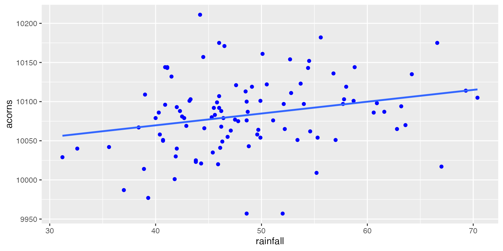
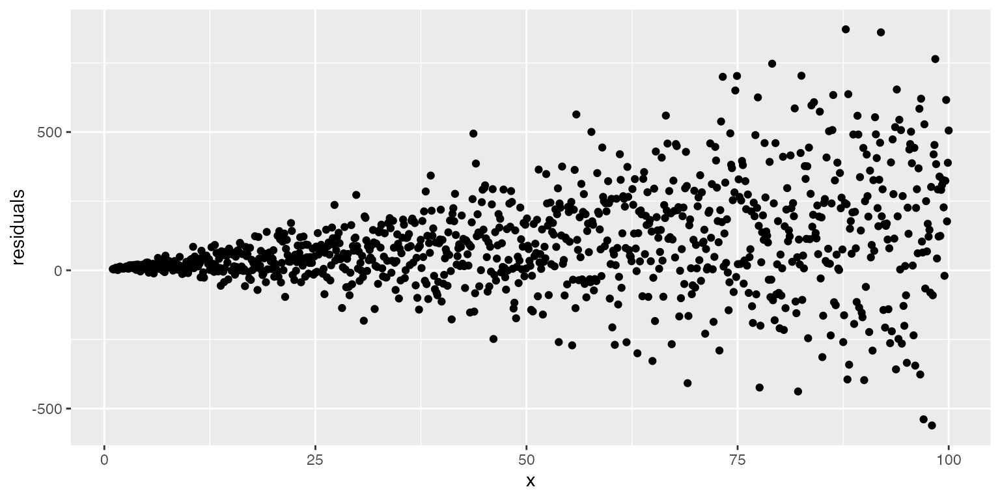
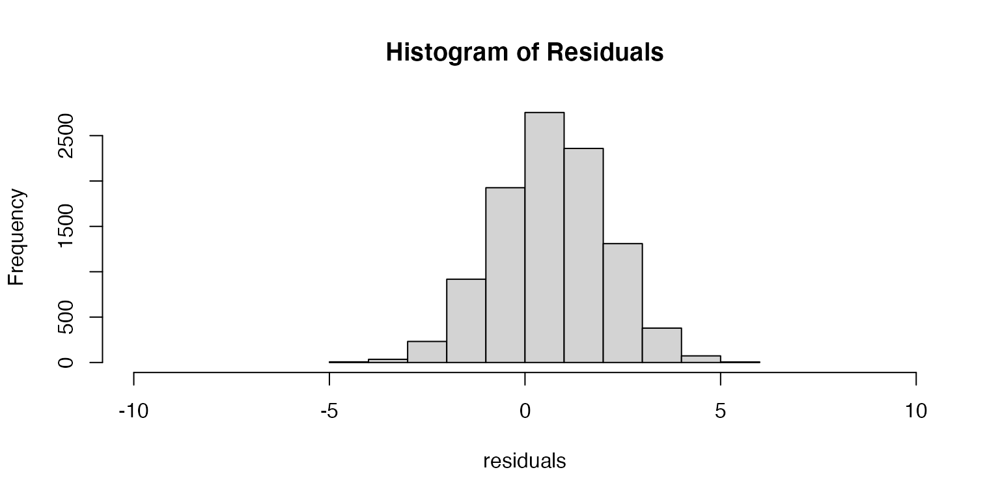
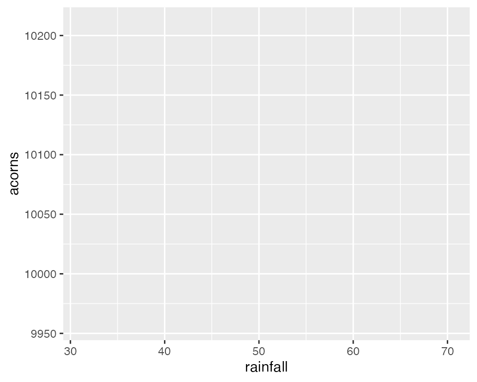
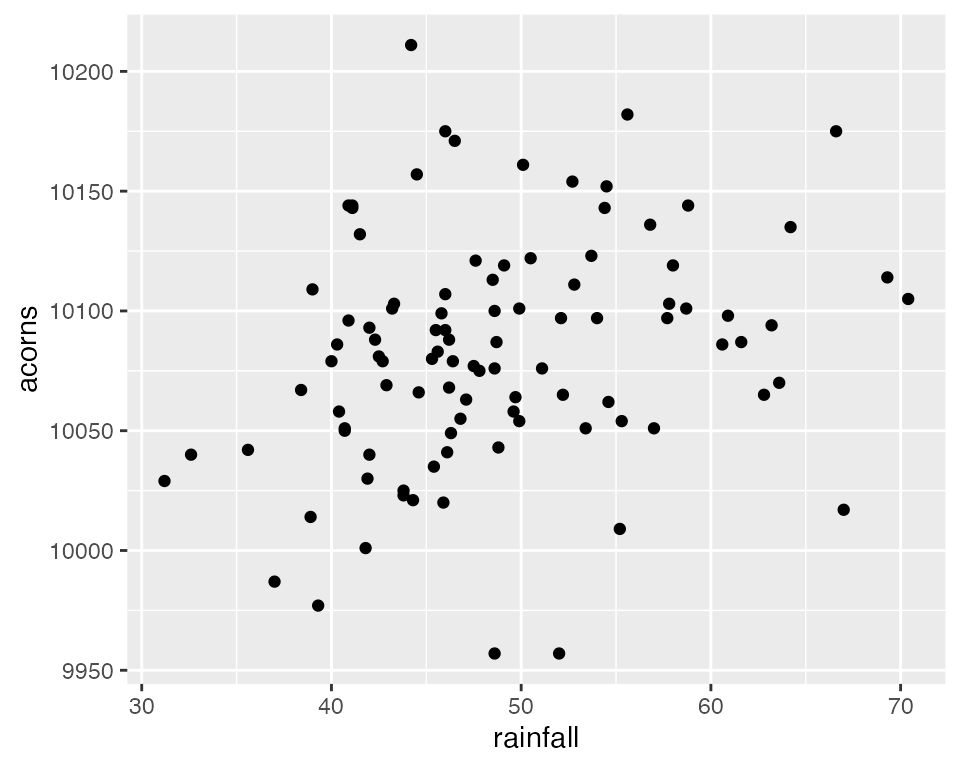
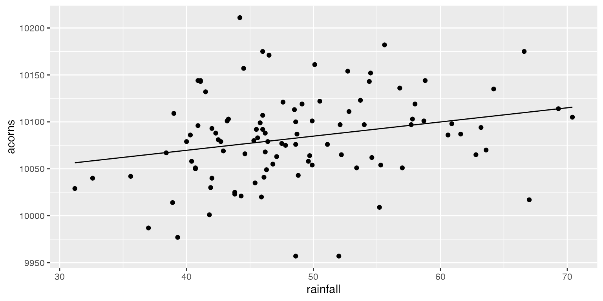
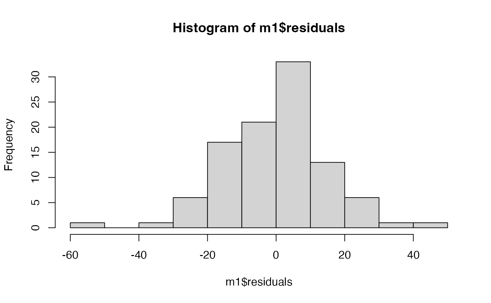

lab03_linear_models.RmdIntroduction to R Markdown
Creating R Markdown files
Creating code chunks
Using RStudio Projects
Organizing directories and subdirectories
Introduction to linear models
Simple Linear Regression
Parameter interpretation
Residuals
Assumptions of linear models
Linear models in R
A brief aside about R graphics
Parameter interpretation in R
Formally, a linear model is defined as a model that specifies a linear relationship between a response variable and a number of predictor variables.
Below is an example of a linear model. We will call this the “General Linear Model” because it does not represent a specific model but rather represents all linear models in general.
\[ \overbrace{{y_i}}^\text{response} = \underbrace{\color{red}{\beta_0} + \color{red}{\beta_1}{x_{i1}} + \color{red}{\beta_2}{x_{i2}} + ... + \color{red}{\beta_p}{x_{ip}}}_\text{Deterministic} + \overbrace{\color{red}{\epsilon_i}}^\text{stochastic} \]
where:
\(y\) = the response
\(\beta\) = the effect that a particular predictor has on the response
\(x\) = a predictor
\(\epsilon\) = residuals
Note: Some of the values are highlighted in \(\color{red}{red}\). This is showing the fact that these values are estimated from the model whereas the other values are provided to the model in the form of data.
Note: The deterministic part is the part that we can account for given the data that we have. The stochastic portion is the extra bit (randomness) for which our model does not account.
Also keep in mind that the predictor variables (\(x_i\)) may take many forms. What are some examples of the types below?
Let’s look at an example of a linear model with only one continuous predictor. In this dataset, the yearly rainfall (mm) is being used to predict the average number of acorns produced by White Oaks (Quercus alba) in north Georgia.
\[ y_i = \beta_0 + \beta_1x_i + \epsilon_i \ \ \ \ \ \text{where} \ \ \ \ \ \epsilon_i \sim \text{N}(0,\sigma) \] Here we have an example where the response variable (y) is being predicted using only one predictor variable (x).

Above, we have written a linear model which predicts the number of acorns on an average White Oak tree using the yearly rainfall. Before moving forward, let’s talk about how we would interpret the \(\beta_0\) and \(\beta_1\) in our model.
\(\beta_0\): Intercept; the expected value of \(y_i\) when all predictors = 0
\(\beta_1\): Slope: the expected change in \(y_i\) resulting from one unit change in the associated predictor variable \(x_n\)
A few questions to think about related to these:
What is the biological meaning of the intercept? Does it have a biological meaning?
What are the units of the predictor variables (e.g., mm, \(\mu L\), % canopy cover)?
Keep in mind that in any linear model that we create, we will not be able to perfectly predict a response given a set of predictor variables. This is especially true in ecological systems where data are often quite messy. As a result, we can see above that even though we have fitted a prediction line through the dataset, it overestimates the number of acorns at some values of rainfall and underestimates at others.
These differences between the observed values of the response (\(y_i\)) and the predicted values of the response from our model (\(E[y_i]\)) are known as Residuals. These residuals represent the variation in \(y_i\) which is not explained by any \(x_i\) in our model.
Later in the lab, when we attempt to estimate \(\beta_0\) and \(\beta_1\) above, we will do this by minimizing the size of the residuals (e.g., ordinary least squares).
When we are using R to help with data analysis, keep in
mind that, for the most part, R is happy to do anything
that you tell it to do. In reality though, every linear model that we
will use this semester will come with a set of assumptions. Before using
any model for data analysis, you will need to consider the assumptions
of that model and decide whether or not it is reasonable to make those
assumptions. If it is, that model may be appropriate for that analysis;
if it is not, you will need to consider other options.
All linear models have at least 6 explicit assumptions. In this course, we will primarily consider the first 4 of these assumptions, but it is good to know that the others (and usually more) exist. As we progress through the course, we will see how we can test these assumptions and what our options are when the assumptions are not met.
As we go through these assumptions try to find in our linear model where these assumptions show up (some are more subtle than others).
Note: This assumption DOES NOT mean that we need to be able to fit a straight line through the data. Often, we will actually used a curved line (in the cases of quadratic relationships). Rather, this assumption means that the parameters themselves enter the model linearly. This means that for one unit change in a predictor, there is ALWAYS the same constant change in the response.
Let’s see some examples:
\[ y_i = \beta_0 + \beta_1x_1 + \epsilon_i \]
\[ y_i = \beta_0 + \beta_1x_1 + \beta_2x_1^2 + \epsilon_i \]
\[ y_i = \beta_0 + \beta_1x_1 + \beta_2x_2x_3 + \epsilon_i \]
\[
y_i = \beta_0 + x_1^{\beta_1} + \beta_2x_1^2 + \epsilon_i
\]
This assumption will be important as we progress through the semester and perform hypothesis testing to assess the significance of predictor variables. While normality of residuals is not required, it suggests that the model is doing a good job of predicting the response (i.e. most residuals are close to zero and larger errors are much less likely).
Variance of the residuals can best be seen by creating a plot of the model residuals across the range of a predictor.

When might this assumption be violated?
This assumption means that we cannot predict the size of a residual from another residual (autocorrelation) or from the value of a predictor variable (endogeneity).
When might this assumption be violated?
If the residuals are centered on zero, then our estimate of the parameter is doing a good job of approximating the true value of the parameter. If the residuals are not centered on zero, then the model is either consistenly under or over estimating the parameter values (a biased estimator).

If one explanatory variable is able to be predicted using others (the information provided by the variable is redundant) then we refer to that as multicollinearity.
What are some examples?
Above, we have seen an example of a linear model with only one
continuous predictor variable. Now we will see how we might create this
model in R.
Open your ‘FANR6750’ Rstudio project (if you have one)
Create a new ‘R’ script and save it to the directory where you store your lab activities. Name it something like ‘lab03-SLR.R’
Load the ‘FANR6750’ package and the ‘raindata’ object
Before we do anything else, lets examine our dataset and plot the rainfall-acorn relationship.
R has very powerful graphing capabilities that make it
possible to create data visualizations for reports or publications. As
with most tasks in R, there are many ways to create graphs
and you will find that people have very strong feelings about the best
approach.
The debate over graphics in R usually boils down to
using the built-in graphing functions (“base graphics”) vs the
ggplot2 package. There are some advantages to both
approaches, but for the most part the newer generations of
R users prefer ggplot2. Therefore most of the
sample code provided in lab will reflect that preference. However,
I don’t care how you make your plots as long as they effectively
display the information you are trying to convey. If you prefer
base graphics, by all means use base graphics.1
ggplot2
Because the code I provide will use ggplot2, it is worth
briefly learning/reviewing how this package approaches data
visualization.
The power and flexibility of ggplot2 come from it’s
consistent structure. Although a bit confusing at first, once you get
the hang of it, the structure actually makes it quite easy to create
highly customized visualizations. All plots created using
ggplot2 use the same underlying structure:
\[\underbrace{ggplot}_{initiate\; plot}(\underbrace{data = df}_{data\;frame},\; \underbrace{aes(x =\; , y = \;)}_{plot\; attributes}) + \underbrace{geom\_line()}_{geometry}\]
The ggplot() function initiates a new plot. In this
function, you tell ggplot2 what data frame you will be
using for the plot (ggplot only accepts data frames as
input) and you tell it how to map attributes of the data to the visual
properties of the figures. Attributes are mapped inside the
aes() argument. Attributes usually include location
(x-axis and y-axis placement), color, size,
shape, line type, and many others. In general, each attribute
will be mapped to one column of your data frame.
The ggplot() function simply initiates a graph - if you
run just that portion of the code you will get a blank graph. We can see
that by creating a new plot showing the relationship between
rainfall (the x-axis of the plot) and acorns
(the y-axis):

You can see that ggplot created a figure with the
correct axes and labels. But no data. That’s because we didn’t tell
ggplot what type of geometry to use to represent
the data. Geometry refers to the type of geometric object(s) we want to
use to display the data. Common geometries include points (e.g., scatter
plot), lines (e.g., time series), and bars (e.g., histograms). There are
many others. Once we add a geometry, we can see the data:
ggplot(data = raindata, aes(x = rainfall, y = acorns)) +
geom_point()
Now that we have plotted the data, we can see that there appears to
be a linear relationship between the rainfall in a particular year and
the acorn production of White Oaks. Next, we will perform Simple Linear
Regression in R to estimate the intercept and slope of the
regression line.
mod1 <- lm(acorns~ rainfall, data= raindata)
# It is often helpful to adjust the way R displays numbers to avoid having to
# interpret scientific notation. One way we can do that is using the options function.
options(scipen= 100)
summary(mod1)
#>
#> Call:
#> lm(formula = acorns ~ rainfall, data = raindata)
#>
#> Residuals:
#> Min 1Q Median 3Q Max
#> -130.821 -28.007 -0.114 26.904 134.951
#>
#> Coefficients:
#> Estimate Std. Error t value Pr(>|t|)
#> (Intercept) 10009.3355 29.0556 344.488 <0.0000000000000002 ***
#> rainfall 1.5093 0.5882 2.566 0.0118 *
#> ---
#> Signif. codes: 0 '***' 0.001 '**' 0.01 '*' 0.05 '.' 0.1 ' ' 1
#>
#> Residual standard error: 47.01 on 98 degrees of freedom
#> Multiple R-squared: 0.06296, Adjusted R-squared: 0.0534
#> F-statistic: 6.584 on 1 and 98 DF, p-value: 0.0118One of the most important parts of using R for data
analysis will be learning to interpret the results provided as
output.
How should we interpret these model parameters? What do they mean in the context of the statistical model and in the context of the biological data?
# Now let's plot our model predictions
mod1_fit <- predict(mod1)
ggplot(data = raindata, aes(x = rainfall, y = acorns)) +
geom_point() +
geom_line(aes(x = rainfall, y= mod1_fit))
In this data example, a researcher is interested in using the average density of feral cats (cats/square mile) in 100 city parks across the US to predict the number of lizards/square mile (prey) at those parks.
Create an R Markdown file to do the following:
R chunk to load the prey data using:Make a figure that plots the raw data. Keep in mind which axis you will want to plot the predictor variable vs the response variable.
Create a content header called “Linear Model” and under this header, use R Markdown’s equation editor to write the linear model you will use to help answer this researcher’s question. Remember to include all parts of the model including how you would specify the residual structure. Below the model, make sure to define what every term in the model means.
Create a header called “Linear Models in R”. Use the
lm() function to translate your linear model into
R and look at the summary of results.
Interpret the results of your model. Explain what each parameter means both in terms of the model as well as biologically.
Make a new plot which shows both the raw data as well as the fitted line from your model.
Add a section at the end of your file called “Discussion” and address the following questions.
What would happen if we tried to use this model to make predictions outside the range of our data? Would it still be a useful model? Why or why not?
How many lizards would there be if the density of cats = 80? Explain what is happening here and how you might resolve this issue?
Below are two figures. The first shows the residuals of the model plotted against the predicted (fitted) values along with a horizontal line showing the mean of the residuals. The second plot is a histogram of the residuals. Which assumptions of linear models do these plots address? Based on what you see, do these assumptions appear to be appropriate?

A few things to remember when creating the document:
Be sure the output type is set to:
output: html_document
Be sure to set echo = TRUE in all R
chunks so that all code and output is visible in the knitted
document
Regularly knit the document as you work to check for errors
See the R Markdown reference sheet for help with creating
R chunks, equations, tables, etc.
Keep in mind that although we will be using ggplot2, it
is a good idea to have some understanding of how base R
graphics work. Most packages in R, when they produce some
sort of output in the form of a plot, will still create that plot using
base R graphics rather than ggplot. In order to alter those
graphics without having to start from scratch, it will be useful to know
a little about base R graphics.↩︎